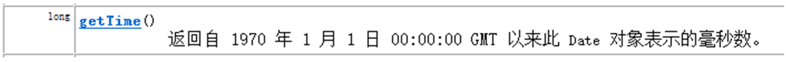

正则表达式（英语：Regular Expression，在代码中常简写为regex）。
正则表达式是一个字符串，使用单个字符串来描述、用来定义匹配规则，匹配一系列符合某个句法规则的字符串。在开发中，正则表达式通常被用来检索、替换那些符合某个规则的文本。
参照帮助文档，在Pattern类中有正则表达式的的规则定义，正则表达式中明确区分大小写字母。我们来学习语法规则。
正则表达式的语法规则：
字符：x
含义：代表的是字符x
例如：匹配规则为 "a"，那么需要匹配的字符串内容就是 ”a”
字符：\\
含义：代表的是反斜线字符'\'
例如：匹配规则为"\\" ，那么需要匹配的字符串内容就是 ”\”
字符：\t
含义：制表符
例如：匹配规则为"\t" ，那么对应的效果就是产生一个制表符的空间
字符：\n
含义：换行符
例如：匹配规则为"\n"，那么对应的效果就是换行,光标在原有位置的下一行
字符：\r
含义：回车符
例如：匹配规则为"\r" ，那么对应的效果就是回车后的效果,光标来到下一行行首
字符类：[abc]
含义：代表的是字符a、b 或 c
例如：匹配规则为"[abc]" ，那么需要匹配的内容就是字符a，或者字符b，或字符c的一个
字符类：[^abc]
含义：代表的是除了 a、b 或 c以外的任何字符
例如：匹配规则为"[^abc]"，那么需要匹配的内容就是不是字符a，或者不是字符b，或不是字符c的任意一个字符
字符类：[a-zA-Z]
含义：代表的是a 到 z 或 A 到 Z，两头的字母包括在内
例如：匹配规则为"[a-zA-Z]"，那么需要匹配的是一个大写或者小写字母
字符类：[0-9]
含义：代表的是 0到9数字，两头的数字包括在内
例如：匹配规则为"[0-9]"，那么需要匹配的是一个数字
字符类：[a-zA-Z_0-9]
含义：代表的字母或者数字或者下划线(即单词字符)
例如：匹配规则为" [a-zA-Z_0-9] "，那么需要匹配的是一个字母或者是一个数字或一个下滑线
预定义字符类：.
含义：代表的是任何字符
例如：匹配规则为" . "，那么需要匹配的是一个任意字符。如果，就想使用 . 的话，使用匹配规则"\\."来实现
预定义字符类：\d
含义：代表的是 0到9数字，两头的数字包括在内，相当于[0-9]
例如：匹配规则为"\d "，那么需要匹配的是一个数字
预定义字符类：\w
含义：代表的字母或者数字或者下划线(即单词字符)，相当于[a-zA-Z_0-9]
例如：匹配规则为"\w "，，那么需要匹配的是一个字母或者是一个数字或一个下滑线
边界匹配器：^
含义：代表的是行的开头
例如：匹配规则为^[abc][0-9]$ ，那么需要匹配的内容从[abc]这个位置开始, 相当于左双引号
边界匹配器：$
含义：代表的是行的结尾
例如：匹配规则为^[abc][0-9]$ ，那么需要匹配的内容以[0-9]这个结束, 相当于右双引号
边界匹配器：\b
含义：代表的是单词边界
例如：匹配规则为"\b[abc]\b" ，那么代表的是字母a或b或c的左右两边需要的是非单词字符([a-zA-Z_0-9])
数量词：X?
含义：代表的是X出现一次或一次也没有
例如：匹配规则为"a?"，那么需要匹配的内容是一个字符a，或者一个a都没有
数量词：X*
含义：代表的是X出现零次或多次
例如：匹配规则为"a*" ，那么需要匹配的内容是多个字符a，或者一个a都没有
数量词：X+
含义：代表的是X出现一次或多次
例如：匹配规则为"a+"，那么需要匹配的内容是多个字符a，或者一个a
数量词：X{n}
含义：代表的是X出现恰好 n 次
例如：匹配规则为"a{5}"，那么需要匹配的内容是5个字符a
数量词：X{n,}
含义：代表的是X出现至少 n 次
例如：匹配规则为"a{5, }"，那么需要匹配的内容是最少有5个字符a
数量词：X{n,m}
含义：代表的是X出现至少 n 次，但是不超过 m 次
例如：匹配规则为"a{5,8}"，那么需要匹配的内容是有5个字符a 到 8个字符a之间
请写出满足如下匹配规则的字符串:
规则："[0-9]{6,12}"
该规则需要匹配的内容是：长度为6位到12位的数字。
如：使用数据"123456789"进行匹配结果为true；
使用数据"12345"进行匹配结果为false。规则："1[34578][0-9]{9}"
该规则需要匹配的内容是：11位的手机号码，第1位为1，第2位为3、4、5、7、8中的一个，后面9位为0到9之间的任意数字。
如：使用数据"12345678901"进行匹配结果为false；
使用数据"13312345678"进行匹配结果为true。规则："a*b"
该规则需要匹配的内容是：在多个a或零个a后面有个b；b必须为最后一个字符。
如：使用数据"aaaaab"进行匹配结果为true；
使用数据"abc"进行匹配结果为false。
public boolean matches(String regex) //判断字符串是否匹配给定的规则
举例：校验qq号码.
1: 要求必须是5-15位数字
2: 0不能开头
代码演示：
String qq = "604154942";
String regex = "[1-9][0-9]{4,14}";
boolean flag2 = qq.matches(regex);
举例：校验手机号码
1：要求为11位数字
2：第1位为1，第2位为3、4、5、7、8中的一个，后面9位为0到9之间的任意数字。
代码演示：
String phone = "18800022116";
String regex = "1[34578][0-9]{9}";
boolean flag = phone.matches(regex);public String[] split(String regex) //根据给定正则表达式的匹配规则，拆分此字符串
举例：分割出字符串中的的数字
代码演示：
String s = "18-22-40-65";
String regex = "-";
String[] result = s.split(regex);
代码演示：
String s = "18 22 40 65";
String regex = " ";
String[] result = s.split(regex);public String replaceAll(String regex,String replacement) //将符合规则的字符串内容，全部替换为新字符串
举例：把文字中的数字替换成*
代码演示：
String s = "Hello12345World6789012";
String regex = "[0-9]";
String result = s.replaceAll(regex, "*");匹配正确的数字
匹配规则：
匹配正整数：”\\d+”
匹配正小数：”\\d+\\.\\d+”
匹配负整数：”-\\d+”
匹配负小数：”-\\d+\\.\\d+”
匹配保留两位小数的正数：”\\d+\\.\\d{2}”
匹配保留1-3位小数的正数：”\\d+\\.\\d{1,3}”匹配合法的邮箱
匹配规则：
”[a-zA-Z_0-9]+@[a-zA-Z_0-9]+(\\.[a-zA-Z_0-9]+)+”
”\\w+@\\w+(\\.\\w+)+”类 Date 表示特定的瞬间，精确到毫秒。
继续查阅Date类的描述，发现Date拥有多个构造函数，只是部分已经过时，但是其中有未过时的构造函数可以把毫秒值转成日期对象。
//创建日期对象，把当前的毫秒值转成日期对象
Date date = new Date(1607616000000L);
System.out.println(date);
//打印结果：Fri Dec 11 00:00:00 CST 2020可是将毫秒值转成日期后，输出的格式不利于我们阅读，继续查阅API，Date中有getYear、getMouth等方法，但是他们已经过时，继续往下查阅，看到了toString方法。
点开toString()方法查阅，原来上面打印的date对象就是默认调用了这个toString方法，并且在这个方法下面还有让我们参见toLocaleString方法，点进去，这个方法又过时了，从 JDK 1.1 开始，由 DateFormat.format(Date date) 取代。
既然这个方法被DateFormat.format(Date date) 取代，那么就要去查阅DateFormat类。
l 把日期对象转换成对应的时间毫秒值
DateFormat 是日期/时间格式化子类的抽象类，它以与语言无关的方式格式化并解析日期或时间。日期/时间格式化子类（如 SimpleDateFormat类）允许进行格式化（也就是日期 -> 文本）、解析（文本-> 日期）和标准化。
我们通过这个类可以帮我们完成日期和文本之间的转换。
继续阅读API，DateFormat 可帮助进行格式化并解析任何语言环境的日期。对于月、星期，甚至日历格式（阴历和阳历），其代码可完全与语言环境的约定无关。
要格式化一个当前语言环境下的日期也就是日期 -> 文本），要通过下面的方法来完成。DateFormat是抽象类，我们需要使用其子类SimpleDateFormat来创建对象。
构造方法
DateFormat类方法
代码演示：
//创建日期格式化对象,在获取格式化对象时可以指定风格
DateFormat df= new SimpleDateFormat("yyyy-MM-dd");//对日期进行格式化
Date date = new Date(1607616000000L);
String str_time = df.format(date);
System.out.println(str_time);//2020年12月11日DateFormat类的作用：即可以将一个Date对象转换为一个符合指定格式的字符串，也可以将一个符合指定格式的字符串转为一个Date对象。
指定格式的具体规则我们可参照SimpleDateFormat类的说明，这里做简单介绍，规则是在一个字符串中，会将以下字母替换成对应时间组成部分，剩余内容原样输出：
当出现
y时，会将y替换成年当出现
M时，会将M替换成月当出现
d时，会将d替换成日当出现
H时，会将H替换成时当出现
m时，会将m替换成分
当出现
s时，会将s替换成秒
format方法，用来将Date对象转换成String
parse方法，用来将String转换成Date（转换时，该String要符合指定格式，否则不能转换）。
代码演示：
练习一：把Date对象转换成String
Date date = new Date(1607616000000L);//Fri Dec 11 00:00:00 CST 2020
DateFormat df = new SimpleDateFormat(“yyyy年MM月dd日”);
String str = df.format(date);
//str中的内容为2020年12月11日
练习二：把String转换成Date对象
String str = ”2020年12月11日”;
DateFormat df = new SimpleDateFormat(“yyyy年MM月dd日”);
Date date = df.parse( str );
//Date对象中的内容为Fri Dec 11 00:00:00 CST 2020Calendar是日历类，在Date后出现，替换掉了许多Date的方法。该类将所有可能用到的时间信息封装为静态成员变量，方便获取。
Calendar为抽象类，由于语言敏感性，Calendar类在创建对象时并非直接创建，而是通过静态方法创建，将语言敏感内容处理好，再返回子类对象，如下：
Calendar类静态方法
Calendar c = Calendar.getInstance(); //返回当前时间
public static Calendar getInstance() //获取日期对象
public int get(int field) //获取时间字段值，字段参见帮助文档
YEAR 年
MONTH 月，从0开始算起，最大11；0代表1月，11代表12月。
DATE 天
HOUR 时
MINUTE分
SECOND秒
代码演示：
Calendar c = Calendar.getInstance();
int year = c.get(Calendar.YEAR);public void add(int field,int amount) //指定字段增加某值
代码演示：
Calendar c = Calendar.getInstance();
//修改当前时间为3天后
c.add(Calendar.DATE, 3);
//修改当前时间为5小时后
c.add(Calendar.HOUR, 5);public final void set(int field,int value)//设置指定字段的值
代码演示：
Calendar c = Calendar.getInstance();
//设置时间为2020年5月20日
c.set(Calendar.YEAR, 2020);
c.set(Calendar.MONTH, 4);
c.set(Calendar.DATE, 20);public final Date getTime() //获取该日历对象转成的日期对象
代码演示：
Calendar c = Calendar.getInstance();
Date d = c.getTime();西方星期的开始为周日，中国为周一。
在Calendar类中，月份的表示是以0-11代表1-12月。
日期是有大小关系的，时间靠后，时间越大。